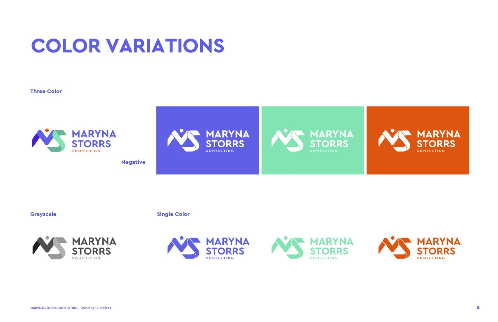
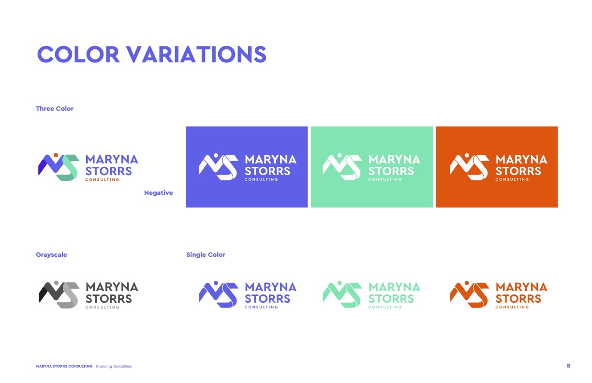

Artful Technology,
Elegant Design
Art-inspired web development.
Creative solutions to accelerate growth.
About Me
Creative Front-End Developer based in Denver, CO, specializing in interactive UX/UI design and multimedia integration. I'm an artist turned coder who loves the outdoors and staying active. Graduating magna cum laude from Utah Tech University, I earned a Bachelor of Science in Animation and Entertainment Arts. My background spans graphic design, web development, animation, 3D rendering, and video/audio production and editing.
I bring dreams to screens—combining over five years of web development experience with a lifelong passion for art to craft elegant, accessible, and visually striking digital experiences.
This site was designed and coded from scratch using HTML, CSS, and JavaScript.
Top Skills
HTML5
CSS3
JavaScript
React.js
Node.js
API
Git/GitHub
SEO
WordPress
Other Skills
Styling
SCSS/SASS
Tailwind CSS
Bootstrap
Shadcn UI
Material UI
Figma
Languages
TypeScript
PHP
SQL/MySQL
Shell Scripting (Zsh)
Media
Adobe Creative Cloud
Animation
Photo/Video Editing
Digital Photography
Audio Production
Logic Pro X
Projects
Highlight:
Stone/Oak Dating
Dating app UI built with mobile first design, featuring right & left swiping functionality and unique activity generator in chat section. Built with React, implementing HTML, CSS, JavaScript, and additional libraries.
Images from pexels.com.
Technologies Used
React
React Libraries
JavaScript
HTML
CSS
Image Fetching
Git
Responsibilities
Latest Project:
Maryna Storrs Consulting
This project was for Maryna Storrs, a leadership coach looking to attract high-level executives. The goal was to build a website to drive bookings through Calendly and capture leads with Klaviyo, completed within 1 month. Get an in-depth look at my process below.

Technologies Used
WordPress
JavaScript
HTML
CSS
Calendly
Klaviyo CRM
2. Design & Wireframe
I was given Brand Guidelines which helped me further refine the stylistic vision that Maryna had. Although I have built many wireframes in the past, I was provided a wireframe from the marketing lead that was made using scene.io. I assessed which elements would be most important for the user experience as they navigated the site, prioritizing signing up with Maryna, which was the ultimate goal.
 

4. Development
The site was rebuilt in WordPress using the Flatsome theme. I integrated Calendly, Klaviyo, and ensured responsive, accessible layout. SVG wave transitions were removed due to cross-device bugs and replaced with built-in WordPress transitions. Maryna requested a way to make comments directly on the site to express her opinions in real time, so I installed a third-party collaboration plugin from atarim.io.

Powerful Collaboration